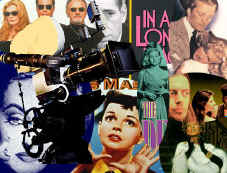
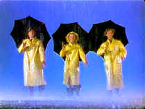
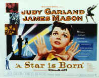

|
Through
a Lens Obliquely
By Stu Kobak
After watching
countless Hollywood productions, you can't help but wonder with
amazement at the uncanny ability to use mirrors in films with no hint
of cameras or crew intruding on the image. With some of the same
magic, when Hollywood holds its own image up to the mirror in movies,
remarkably the establishment usually comes out unscathed or redeemably
bloodied. Hollywood puts itself to the mirror rarely and at oblique
angles to selectively choose what's reflected through a lens. When it does the result is often some fascinatingly riveting
filmmaking.
Hollywood
often walks on the shards of old film strips before taking a hard
celluloid look at itself. After all, who green lights these projects;
often it is those most ripe for satire that have the power to decide
what films are made. When the subject matter is especially biting its
like cannibals feasting on themselves. But then nobody likes to think
of themselves in satiric terms and when they may understand the
general mirth of others when contemplating their colleagues, it’s
easy to exclude or delude themselves. How many films are deep-sixed
because of sensitive egos will always be debatable, but the films get
made. Often inspiration comes from the community of independent
filmmakers, unshackled by Hollywood and feeling fresh and brazen
enough to take on the establishment of their industry. Some films
result from a filmmaker’s own frustration within the Hollywood
community and an attempt to return to one’s roots. Some make their
way to the screen because the power and seduction of a successful
novel are too tempting for Hollywood moguls to let their sensitive
skins spoil the potential financial must. Whatever the reason, good
Hollywood films are often the most satisfying for cinephiles.
 The recent release of The Bad and the Beautiful
on DVD from MGM provides some of the best lensing of Hollywood ever.
Vanity is laid out on a polished plate for delicious entertainment
artfully composed in perfect balance of actor, director, writer,
producer and management. Classy musical specialist Vincente Minnelli
was given the choice plum of a film to direct. Minnelli and MGM put
together a perfect cast. Simmering Kirk Douglas, moody, unpredictable,
dominates every frame of screen time as the haunted producer and
studio head Jonathan Shields. Lana Turner plays opposite Douglas
as the troubled star Georgia Lorrison. Sparks light up the Hollywood
firmament in every screen moment shared by the pair. It's a
perfect blend of fire and ice. Dick Powell is wonderful as wry writer
James Lee Bartlow. Powell's coolly self-deprecating delivery adds a
musical light-motif to the melodramatic fireworks. Barry Sullivan is
innocently sympathetic as director Fred Amiel. And Walter Pidgeon
lends rock solid class to the role of studio bureaucrat Harry
Pebbel. The recent release of The Bad and the Beautiful
on DVD from MGM provides some of the best lensing of Hollywood ever.
Vanity is laid out on a polished plate for delicious entertainment
artfully composed in perfect balance of actor, director, writer,
producer and management. Classy musical specialist Vincente Minnelli
was given the choice plum of a film to direct. Minnelli and MGM put
together a perfect cast. Simmering Kirk Douglas, moody, unpredictable,
dominates every frame of screen time as the haunted producer and
studio head Jonathan Shields. Lana Turner plays opposite Douglas
as the troubled star Georgia Lorrison. Sparks light up the Hollywood
firmament in every screen moment shared by the pair. It's a
perfect blend of fire and ice. Dick Powell is wonderful as wry writer
James Lee Bartlow. Powell's coolly self-deprecating delivery adds a
musical light-motif to the melodramatic fireworks. Barry Sullivan is
innocently sympathetic as director Fred Amiel. And Walter Pidgeon
lends rock solid class to the role of studio bureaucrat Harry
Pebbel.
A multiple flashback structure is used to tell the
story of Jonathan Shield and the lives he touched. The rigid
traditional structure is a perfect foundation to build the portrait of
uncontrollably amoral ambition. Does The Bad and the Beautiful magnifying
glass expose an accurate blow up of the Hollywood establishment? It
carefully treads around the political issues of the big studios,
instead focusing on an independent studio started up by a maverick
producer, the son of a little admired schlock studio name. When
Shields Productions has an iron-clad contract with its star Georgia
Lorrison, the cavalier Jonathan Shields lets her tear it up. Doesn't
sound much like the reality for stars battling the big studios for
some measure of artistic freedom in their career choices. Still, The Bad and Beautiful remains one of my
favorite Hollywood mirrors reflecting in the beautiful composed
pictures
 In the same
year MGM delivered perhaps the most exuberant portrait of Hollywood
ever filmed. Again framed in flashback, Singin' in the Rain, the
glorious musical satire on Hollywood's entry in the sound era,
succeeds on virtually every level. Singin' in the Rain
represents the MGM musical at the very pinnacle of its success. The
songs and dances never fail to light up the screen. The title song, as
sung and danced by Gene Kelly, endures as a symbol
of the best of Hollywood.
Along with Gene Kelly, stars Debbie Reynolds and
Donald O'Connor exude exuberance. The backstage banter is nothing less
than witty and there's the grandest live dubbing session ever recorded
anywhere as Lena Lamont, played with brash brass by Jean Hagen, is revealed to have one of the most grating
voices even heard in Hollywood. The moment sings for multiple curtain
calls.
Singin' in the Rain is a pure celebration of
Hollywood. Co-directed by Kelly and Stanley Donen, the delightful
script from Betty Comden and Adolph Green matches note for note with
the joyous musical score and songs. Don't look for any insightful or
biting universal truths about the Hollywood dream factory. Singin'
in the Rain is about drinking in the intoxicating joy of pure
Hollywood.
 The 1950s
turned out to be a vintage year for Hollywood self-examination. In
1954's A Star is Born, Judy Garland got arguably the dramatic pearl of her career as
innocent Esther/Vicki. The transformation from singer
Esther Blodgett to star Vicki Lester is a remarkably poignant journey for
actress Garland. Co-star James Mason chews the scenery
with juicy relish as the fading star alcoholic matinee idol Norman
Maine. The venom and back-biting that many associate with Hollywood is
represented by odious press agent Matt Libby. Jack Carson milks the
role for every drop of snake poison he can muster. When he turns his
back on Maine you can literally hear the rattling in his bottom. On
the other hand, studio head Oliver Niles is presented in a glowing
light, protective of his stars and genuinely concerned with their
well-being, a benign nod to the
establishment.
The decade started out with a cynical look at Hollywood called In a
Lonely Place. It's more a murder mystery than a story of Hollywood,
but lead character Dixon Steele is a an edgy screenwriter and his
affair with actress Laurel Gray is at the heart of the movie. Directed
by Nicholas Ray, the film stars Humphrey Bogart as Steele and Gloria
Graham as Gray.
In Lonely Place was more a mystery, Sunset
Blvd, also released in 1950, was a biting satire. Performance is
at the heart of Sunset Blvd. It's a film about a faded star
starring a faded star. Now that's a Hollywood twist. Gloria Swanson,
once royalty of the silent film era, stars as Norma Desmond, in a
bigger than life performance capturing the fantastic posturing of
stardom. William Holden is the struggling screenwriter who latches
onto the frayed fringes of Desmond's long out of style gowns in an
attempt to keep from drowning in the Hollywood swamp. The force behind
Sunset Blvd was a witty director and writer with a hot hand
Billy Wilder. Wilder's edgy humor and direct filmmaking style made
huge hits of the classic noir Double Indemnity and won an
Oscar© for Ray Milland in The Lost Weekend and an nod as Best
Director for himself. Award coin gave Wilder some latitude in laying
the lash on Hollywood with Sunset Blvd., but Desmond was an
easy target, and it was easy to see why Hollywood forgot this relic in
favor of younger and more vibrant stars. Of course, the screenwriter
was the ultimate whipping boy winding up something akin to a pool
boy. long out of style gowns in an
attempt to keep from drowning in the Hollywood swamp. The force behind
Sunset Blvd was a witty director and writer with a hot hand
Billy Wilder. Wilder's edgy humor and direct filmmaking style made
huge hits of the classic noir Double Indemnity and won an
Oscar© for Ray Milland in The Lost Weekend and an nod as Best
Director for himself. Award coin gave Wilder some latitude in laying
the lash on Hollywood with Sunset Blvd., but Desmond was an
easy target, and it was easy to see why Hollywood forgot this relic in
favor of younger and more vibrant stars. Of course, the screenwriter
was the ultimate whipping boy winding up something akin to a pool
boy.
With the success of Sunset Blvd., Hollywood looked for other stories
of stars fallen from the glitzy Hollywood heights. Bette Davis, with
the taste of All About Eve's Margo Channing still on Hollywood's lips, starred in
The Star, a romantic drama of a movie star trying to make a
comeback. Bette failed to ignite any Hollywood excitement and the
film was less about Hollywood and more about character.
Another seldom seen look at Hollywood ambition is Paddy Chayefsky's
The Goddess. Loosely based on Marilyn Monroe, Kim Stanley's Emily Ann
Faulkner is a blonde hungry for fame. Directed by Hollywood veteran
John Cromwell from Chayefsky's screenplay, the film probably falls
short on the less than glorious locks of leading lady Stanley. This is
one role that called for an excessive eruption of screen sex appeal of
which Stanley, fine actress that she was, could not deliver. The 1958
film garnered respectful reviews and disdainful box office.
Often thought of as a companion film to The Bad
and the Beautiful, Two Weeks in Another Town (1962) once
again teams star Kirk Douglas and director Vincente Minnelli in a
Hollywood saga. This time out Douglas plays a faded movie star Jack
Andrus looking to resuscitate his career as a director. Douglas is
lots more convincing as the ruthless Jonathan Shields in the former
picture. Somehow, it's hard to think of Douglas as a failure in
anything and that's what Two Weeks asks of its audience.
The movie is just as much about the fast lives of celebrities as it is
about the movie-making process. Back-biting is served up with relish
as relationships change according to success. Along with Douglas,
Edward G. Robinson gets a wonderful role as once powerful director
Maurice Kruger turning to an Italian production company to keep from
sinking into the deep swamp of dead directing careers.
Though Two Weeks in Another Town may get
heavy-handed in its melodramatic treatment, the performers are
fascinating, the setting enticing, and Minnelli's control over the
overall production makes this one slick Hollywood look.
The Stunt
Man (1980) satirizes a Hollywood location shoot. The movie's
thing, at all costs: when a stunt takes a bad turn, director Eli Cross
barely blinks an eye. The ruthless, effervescent, cynical, survival instincts of director
Cross rev up The
Stunt Man's engine. There's some outstanding behind the scenes
stunt choreography, highlighted by a wonderfully funny, perfectly
staged roof-top chase. 
Writer/director Richard Rush was the force
behind The Stunt Man. It took lots of patience and fortitude to
get this movie green-lit, but Rush persisted in getting this biting
look at the movie-making process made. Rush was ever-so-lucky to
land Peter O'Toole as Eli Cross. The wan actor feasts on biting
dialogue with wonderfully droll delivery, half the time flying high
over his set on a crane, viewing the whole world as but another motion
picture production challenge.
Some
Hollywood tales live on the periphery of standard behind-the-scenes
looks at the business. Sunset
is a often entertaining effort from writer/director Blake Edwards that
eschews the classic Hollywood insider structure. The spirit of Sunset
is pure entertainment. The studio lot depiction is subservient to the terrific
conceit, real-life legendary Western marshal Wyatt Earp meets cowboy
movie star Tom Mix. When it focuses on the banter between Earp and
Mix, slipping slyly behind the camera, Sunset is bright and
witty. Unfortunately, Sunset draws its target more on being
a murder mystery than a Hollywood opus. The sexual play of Hollywood
big-wigs overtakes the back-lot dry wit with a descent into the moral
corruption of Hollywood.
James Garner as Wyatt Earp and Bruce Willis
as Tom Mix have lots of fun playing against each other. The laid back
style of Garner and Willis' hip banter deliver a fresh version of the
Earp/Doc Holiday combination. These two stars save the day and keep Sunset
from clouding over with heavy-handed mystery plotting that is nothing
more than "B" movie material.
Directed by Robert Altman, always a Hollywood
outsider, The Player, 1992, takes special pleasures in
satirizing the green-light process of getting a film made. The pitch
meeting is taken apart with incisive delight. The mystery surrounding
the murder of, yes, a writer, is set-up simply as a support system to
poke fun at modern Hollywood's artistically barren
"suits." Griffin Mill is the studio "suit"
who will stop at nothing to stay on top. Tim Robbins' amoral insouciance
as Mill is perfect fodder for satire. Whether basking in a hot mud spa
baths with cucumbers cooling his eye-lids or coolly taking pitch
meetings with a cavalier attitude, Robbins stays focused through
Altman's lens. The script from writer Michael Tolkin is especially
savvy from an outsider's point-of-view.
The screenwriter is often the main focus of
Hollywood celluloid reflections. Low men on the totem pole, writers
are often the easiest Hollywood targets. Offend a writer and you lose
little or nothing. The Coen Brothers, Hollywood outsiders, developed a
novelist seduced by Hollywood at the center of their Hollywood
satire Barton Fink (1991) The Coen's surrealistic approach to the Hollywood
experience alienates it from most standard Hollywood. The twists and
turns of Barton Fink fail to ignite a fire despite some heavy
pyrotechnical musings. John Turturro makes the screenwriter look more
like playwright Clifford Odets than Odets himself. John Mahoney
is outstanding as W. P. Mayhew, a seasoned screenwriter selectively sucking at the Hollywood nipple.
The Indie
film has had its share of good filmmaking about itself.
Writer/director Tom DeCillo's Living in Oblivion is a perfect
little gem of a movie about moviemaking. Cleverly constructed film,
borrowing from classics like Rashomon yet at the same time The
independent filmmaking process plays itself out in layers of
nightmares ,dreams and different points of view as frenetic
director Nick Reve tries to keep his low, low budget movie on
schedule played by Buscemi. Each sequence adds a layer of interest to
the previous one. The behavior of the actors changes radically
day to day and the delightful location shoot culminates in the filming
of its own imaginative and hilarious dream sequence replete with a
nightmare mother and a dwarf with giant pretensions. DeCillo is
clearly poking fun at actors that add elements of art to their jobs
that simply do not exist.
Steve
Buscemi playing Nick Reve has never had a better opportunity to strut
his stuff as the director’s whose shoot turns into a nightmare that
includes every conceivable miserable permutation of the perils of low
budget filmmaking. Jamie LeGros is very funny as the pretentious
leading man and Dermot Mulroney uses a patch to full advantage as the
frustrated cameraman.
DeCillo
delivers delightfully in this splendid spoof on movie making.
Directing from his own script, he is comfortable enough to poke fun at
everyone on both sides of the camera. I look for some interesting
future work from him.
The
star biopic is another time-honored look at Hollywood. Mommie
Dearest (1981),
the seething portrait of Joan Crawford from her daughter's point of
view features a performance of such camp power that it works on that
level alone. Faye Dunaway piles on the make-up, prances with the
swagger of years of Hollywood glory and even gets down on her knees to
scrub the floor obsessively. Other excellent biopics include Frances
(1982), a sad-eyed dark toned tale of promise and failure. Jessica
Lange is haunting as the beautiful tortured actress Frances Farmer. Chaplin
(1992), directed by Richard Attenborough, is a sincere portrait of the
great silent artist starring Robert Downey as the great screen clown.
The permutations of delight offered up by
Hollywood's self-examination are endlessly fascinating. Plenty of
films fall over their own wisecracks and the melodrama gets laid on
heavier than senior movie star make-up, but a sampling of Hollywood
celluloid is likely to deliver the goods and offer insights into the
challenges of making movies.
Not all these Hollywood picks are available on DVD
yet. Along with The Bad and the Beautiful, delivered in
a very enjoyable transfer from Warner, Singin' in the Rain can
be caught in glorious color on DVD in another Warner release. Judy
Garland's great performance in A Star is Born is
preserved on DVD in an excellent release from Warner again. The
Stunt Man has been packaged as an outstanding special edition
by Artisan with insightful and often hilarious participation by
Richard Rush. Mommie Dearest gets full exposure from
Paramount in an excellent DVD release. You can catch all the satire of
The Player in a special edition DVD from New Line,
including incisive commentary from director Altman and writer Tolkin.
Deleted scenes and a featurette enrich the package. Director Graeme
Clifford adds his commentary to the excellent Anchor Bay release of Frances.
An early DVD release from Live Entertainment, Chaplin
was shorted on the anamorphic enhanced for 16 x 9 and exists in a
widescreen only version. You catch Sunset on DVD from
Columbia in either widescreen anamorphic or pan & scan.
Still awaiting a deserved DVD release is the great Sunset
Blvd. A Paramount release will likely street in the second on
third quarter of this year. Hopefully, The trailer for Two Weeks
in Another Town accompanying The Bad and the Beautiful is
an indicator of a planned release of that film. Living in
Oblivion, which was released on laser disc by Columbia, surely
deserves to see DVD light. Barton Fink, probably the most
outrageously off-center Coen Brothers flick, was a Fox laser disc
release. Fox had suggested a late 2001 DVD release for the film, but
as yet no Fink. Columbia has the rights to In a Lonely
Place and I wouldn't be surprised to see a release later this
year, though the studio has been cautious about flooding the market
with classic catalog product. The Goddess is also controlled by
Columbia. It appears that Warner has the right to The Star,
though I wouldn't look for a DVD release of it anywhere soon if at
all.
|
|

Selections from the Feature
Archive include articles on
Akira Kurosawa, Frank
Darabont, Blonde
Bimbos, Hollywood
Street Gangs, or Vietnam:
The Hollywood Pariah, and many more....
Puttin on the Ritz

Fred Astaire and Cyd Charisse bring Silk Stockings to life, a
remake of Ninotchka, one of many films successfully turned into
musicals by the Hollywood dream factory. Read all about remakes into
musicals by clicking on the divine dancers.

Charade/A,B

Successfully combining romantic comedy and suspense is no small
achievement. Charade does it with panache.

The
Movie Poster Archive includes extensive poster images from the films
of stars like Susan Hayward, Kirk Douglas, Katharine Hepburn and many
more. Our
featured star is Kirk
Douglas.

 Have
you visited Home Theater Talk
lately? One of the friendliest places on the Net for Home Theater and
DVD discussion, you can get help for installation problems or simply
share your opinions with other Vidiots. Have
you visited Home Theater Talk
lately? One of the friendliest places on the Net for Home Theater and
DVD discussion, you can get help for installation problems or simply
share your opinions with other Vidiots.
 Brad
Lang continues to add more interesting material to the extensive
collection at Classic
Movies. Everything from actors and actress to
your favorite directors is linked at the site. Brad
Lang continues to add more interesting material to the extensive
collection at Classic
Movies. Everything from actors and actress to
your favorite directors is linked at the site.

Mystery writer Fred Hunter digs into
classic films on DVD. Check out his insightful reviews at The
Classics on DVD.

"Products and services perfecting
home theater"
ISF Calibrations in Colorado, 6500K monitor bias lighting.

Glenn Erickson's insightful DVD reviews have been a Internet fixture
for several years. Check out some of his sophisticated feature
articles. Currently hosted by DVD Talk.

ISF Monitor
Calibrations in the Tristate New York area. Lots of hardware info
and frequent hardware peaks from video expert Kevin Miller. They may
be judgmental, but that's the point, isn't it. Lots of DVD reviews
plus news and more.
 Gary
Morris's insightful publication Bright Lights Film Journal
turns the celluloid in films from a unique perspective. Click on the
image above for more pure movie views. Gary
Morris's insightful publication Bright Lights Film Journal
turns the celluloid in films from a unique perspective. Click on the
image above for more pure movie views.

DVD
Demystified makes it all clear. The official Internet
DVD FAQ for the rec.video.dvd Usenet newsgroups.

Looking for information about
widescreen movies and hardware. The
Widescreen Movie Center is the place to go.
Take a look at the merry
images of America's gift to the movies: Hollywood
Musical Posters are featured from The Movie
Poster Archive.

I just love to watch the FBI Warning and
that isn't enough, I am treated to a graphic designer's wet logo
dream.
FBI
Warning/
Logo Wars
L.A. Confidential (SE) /A,A

Unquestionably the best picture of 1997. Top-notch
entertainment with superb acting.

Click on
the DVD MIA symbol for profiles of DVDs missing in action.
Add films to the DVD
MIA Master List by
filling out a simple form. Click
Here |